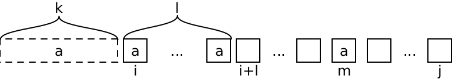

Leetcode Notes
Table of Contents
- 1. random tricks
- 2. [A] approaches
- 3. [A] special problems
- 4. data structures
- 5. Tricky problems
1 random tricks
integer to binary string: bin(324)
sort with multiple keys:
sorted([0,1,2,3,4,5,6,7,8], key=lambda x: (x%3, x))
- ord
- chr
@lru_cache decorator can be used for implementing DP, but looks like I have
to use it carefully to always increase the argument:
from functools import lru_cache @lru_cache(maxsize=None) def fibonacci_recursive(n):
9//2 is same as math.floor(9/2)
- indices = np.argsort(nums)
sorted(range(n), key=cmp_to_key(lambda x,y: x-y))
c = Counter(lst) c['key']
1.1 string functions
'hello'.count('l') 'hello'.index('e')
2 [A] approaches
2.1 TODO dynamic programming
2.1.1 (extra-state DP)
This is very good problem. This extends simple DP with
- two dp variables, i and j
- one more state variable k
Reference: A good post.
See the following graph:

The first case, directly consume the left k+l a's, and DP on the rest:
\[T_l(i,j,k) = T(i+l,j,0) + (k+l)^2\]
For each m, consume [i+l:m-1], and DP on rest:
\[T_m(i,j,k) = T(i+l,m-1,0) + T(m,j,k+l)\]
The l is computed by:
def get_l(i, j): l = 1 while l <= j-i and boxes[i+l] == boxes[i]: l += 1 return l
The list of m is computed by:
def get_ms(i, j, l): res = [] for m in range(i+l,j+1): if boxes[m] == boxes[i]: res.append(m) return res
The full DP logic:
n = len(boxes) mem = np.zeros((n,n,n), int) def dp(i, j, k): # the max point of T[i:j] if i > j: return 0 if i == j: return (k+1)*(k+1) if mem[i,j,k] > 0: return mem[i,j,k] l = get_l(i, j) res = dp(i+l, j, 0) + (k+l) ** 2 ms = get_ms(i, j, l) for m in ms: cand = dp(i+l,m-1,0) + dp(m,j,k+l) if cand > res: res = cand mem[i,j,k] = res return res # the final output: dp(0, n-1, 0)
Some tests:
def test(): # 23 removeBoxes([1, 3, 2, 2, 2, 3, 4, 3, 1]) # 9 removeBoxes([1,1,1])
2.1.2 complement's DP
This related, and contains not only one k, but two ks for left and right.
This actually much easier, and not related to remove boxes at all. But there's
one tricky thing to notice: dp(i,j) should indicates the maximum coins we get
when we burst all bolloons in [i:j].
def maxCoins(self, nums: List[int]) -> int: n = len(nums) mem = np.zeros((n, n), int) def coins(i, j, k): return nums[k] * (nums[i] if i>=0 else 1) * (nums[j] if j<n else 1) def dp(i, j): # the max coins we get when we burst all bolloons [i:j] if i > j: return 0 if i == j: return coins(i-1,j+1,i) if mem[i,j] > 0: return mem[i,j] cands = [] for k in range(i,j+1): cand = dp(i, k-1) + dp(k+1, j) + coins(i-1, j+1, k) cands.append(cand) res = max(cands) mem[i,j] = res return res return dp(0, n-1) # 167 maxCoins([3,1,5,8])
2.1.3 complement's DP
See the first discussion in this post. This looks like a number trick, but turns out not. Looks like we have to use DP. There are several tricks:
- Work on
dp(M,K)instead ofdp(N,K). I.e. in M moves and K eggs, what is the largest number N of floors we can check. - the dp equation is tricky:
dp(m,k) = dp(m-1,k-1) + dp(m-1,k) + 1
We first try dp(m-1,k-1), i.e. one less move, one less eggs, so that we have
room for next experiment. So, the first floor we try is dp(m-1,k-1)+1. If it
breaks, we use check the lower floors with dp(m-1,k-1). If it doesn't break,
we still have k eggs, and we can check dp(m-1,k) more. Thus the equation.
Reference to this post.
import math import numpy as np class Solution: def superEggDrop(self, K: int, N: int) -> int: mem = np.zeros((N+1,K+1), int) def dp(m,k): if m==0 or k==0: return 0 if m==1 and k==1: return 1 if mem[m,k] > 0: return mem[m,k] res = dp(m-1, k-1) + dp(m-1,k) + 1 mem[m,k] = res return res for m in range(N+1): if dp(m,K) >= N: return m assert False Solution().superEggDrop(1,2) # 2 Solution().superEggDrop(2,6) # 3 Solution().superEggDrop(3,14) # 4 Solution().superEggDrop(2,2) # 2
2.1.4 Palindromic
730. Count Different Palindromic Subsequences
This could be the standard reference to Palindromic problems. It is quite clever. Not a lot of discussions, most are pretty bad, except this post. So the idea:
For non-distinct:
- dp(i,j) means the result for S[i:j]
- if S[i] ! S[j]:
- dp(i,j) = dp(i+1,j) + dp(i,j-1) - dp(i+1,j-1)
- i.e. remove the overlap
- if S[i] == S[j]:
- first, same: dp(i,j) = dp(i+1,j) + dp(i,j-1) - dp(i+1,j-1)
- but, with additional: + dp(i+1,j-1) + 1
- so finally: dp(i,j) = dp(i+1,j) + dp(i,j-1) + 1
But non-distinct is not really meaningful. So here's the distince one:
- dp(i,j,a) means number of distinct palindromic bordered by 'a inside S[i:j]
- if S[i]
= S[j] =a: very important- dp(i,j,a) = sum([dp(i+1,j-1,x) for x in a,b,c,d]) + 2
- else: dp(i,j,a) = dp(i+1,j,a) + dp(i,j-1,a) - dp(i+1,j-1,a)
One more thing: the initial value must be -1, otherwise there might be infinite loop!
class Solution: def countPalindromicSubsequences(self, S: str) -> int: mod = 10 ** 9 + 7 mem = [[[-1 for _ in range(4)] for _ in range(len(S))] for _ in range(len(S))] def dp(i,j,a): if i > j: return 0 elif i == j: if S[i] == a: return 1 else: return 0 if mem[i][j][ord(a)-ord('a')] >= 0: return mem[i][j][ord(a)-ord('a')] # number of distinct pal bordered by 'a inside S[i:j] if S[i] == S[j] == a: res = 2 for b in ['a', 'b', 'c', 'd']: res += dp(i+1, j-1, b) else: res = dp(i+1,j,a) res += dp(i,j-1,a) res -= dp(i+1,j-1,a) mem[i][j][ord(a)-ord('a')] = res % mod return res res = 0 for a in ['a', 'b', 'c', 'd']: res += dp(0,len(S)-1,a) return res % mod
2.1.5 nested DP
188. Best Time to Buy and Sell Stock IV
This is pretty interesting. Turns out the DP equation is not very difficulty to write.
dp(day, ntrans)means from 1:day days, up to ntrans transactions, what is the max profit.- dp(day, ntrans) = max(max([dp(t,ntrans-1) + prices[day] - prices[t] for t in range(day-1)]), dp(day-1,ntrans))
The interesting part:
- there's a loop in the DP equation
- the loop actually turns out to be slow, and itself can be calculated using DP, so it is "nested DP"
class Solution: def maxProfit(self, k: int, prices: List[int]) -> int: # HACK this fails at one test case, even to allocate the memory # https://leetcode.com/problems/best-time-to-buy-and-sell-stock-iv/discuss/426692/ if k > len(prices): res = 0 for i in range(len(prices)-1): res += max(0, prices[i+1] - prices[i]) return res mem = [[-1 for _ in range(k+1)] for _ in range(len(prices))] mem2 = [[None for _ in range(k+1)] for _ in range(len(prices))] def dp2(t, ntrans): this = dp(t, ntrans) - prices[t] if t == 0: return this if mem2[t][ntrans] != None: return mem2[t][ntrans] res = max(dp2(t-1, ntrans), this) mem2[t][ntrans] = res return res def dp(day, ntrans): if day <= 0: return 0 if ntrans == 0: return 0 if mem[day][ntrans] >= 0: return mem[day][ntrans] # Non-DP solution, TLE at some test cases # max_tmp = 0 # for t in range(day): # tmp = dp(t, ntrans-1) # tmp += prices[day] - prices[t] # if tmp > max_tmp: # max_tmp = tmp max_tmp = dp2(day-1, ntrans-1) + prices[day] mem[day][ntrans] = max(max_tmp, dp(day-1, ntrans)) # print(day, ntrans, mem[day][ntrans]) return mem[day][ntrans] return dp(len(prices)-1, k) def test(): # 2 Solution().maxProfit(2, [2,4,1]) # 7 Solution().maxProfit(2, [3,2,6,5,0,3]) # 0 Solution().maxProfit(2, []) Solution().maxProfit(100, l)
2.1.6 FROM take 1 TO how many to take
From this post. The trick is, not thinking about the process of taking slices, but the process of how many slices to take. Here, dp(i,j,k) means from i to j, take k slices, what's the max. There are some additional tricks for this problem:
- use a invalid condition. The invalid condition is
j - i + 1 < k * 2 - 1,k*2instead ofk*3, because we can pick every 2 nodes without problems. - the initial is cycle, the that is indicated by cycle variable. Only the initial one is 1, all other are non-cycles (i.e. i and j can be taken at the same time)
- we only have two branches, to take j or not
class Solution: def maxSizeSlices(self, A): def dp(i, j, k, cycle=0): if k == 1: return max(A[i:j + 1]) if j - i + 1 < k * 2 - 1: return -float('inf') return max(dp(i + cycle, j - 2, k - 1) + A[j], dp(i, j - 1, k)) return dp(0, len(A) - 1, len(A) // 3, 1)
2.1.7 Other (easy) DP problems
2.1.7.1 (5391) build-array-where-you-can-find-the-maximum-exactly-k-comparisons
The problem is straight forward. I was using peak position and peak value formulation, and it turned out to be complicated. A simpler "prev" just works.
Some tricks:
- the
lru_cache(None)is really magick for speeding up
# by minz-2 from functools import lru_cache class Solution: def numOfArrays(self, n: int, m: int, k: int) -> int: return dp(-1, n, m, k) @lru_cache(None) def dp(prev, n, m, k): mod = 10**9+7 if n == 0: if k == 0: return 1 else: return 0 if k < 0: return 0 res = 0 for mi in range(1,m+1): if prev >= mi: res += dp(prev, n-1, m, k) else: res += dp(mi, n-1, m, k-1) return res % mod
2.1.7.2 (920) number of playlists
The second requirement is ambigious. Other than that, the DP equation is pretty regular. However, two things worth noticing:
- the initial condition
- the recursion version is so much slower
class Solution: def numMusicPlaylists(self, N: int, L: int, K: int) -> int: mod = 10 ** 9 + 7 mem = np.zeros((N+1, L+1), int) def dp(n, l): if l == 0 and n == 0: return 1 if n == 0 and l > 0: return 0 if l == 0 and n > 0: return 0 if mem[n,l] >0: return mem[n,l] res = dp(n-1, l-1) * n + dp(n, l-1) * max(n-K, 0) mem[n,l] = res % mod return mem[n,l] # return dp(N,L) % mod # # ok, this is much faster!! mem[0,0] = 1 for ni in range(1,N+1): for li in range(ni,L+1): mem[ni,li] = (mem[ni-1,li-1] * ni + mem[ni,li-1] * max(ni-K,0)) % mod return mem[N,L] Solution().numMusicPlaylists(3,3,1) # 6 Solution().numMusicPlaylists(2,3,0) # 6 Solution().numMusicPlaylists(2,3,1) # 2 Solution().numMusicPlaylists(1,1,0) # 1 Solution().numMusicPlaylists(16, 16, 4) # 789741546 Solution().numMusicPlaylists(25, 28, 5) # 906368459
2.1.7.3 1386. Cinema Seat Allocation
This is not hard but worth looking at:
- use 1<<c trick to mark the position
- use dictionary to record dp solutions
- for each key not listed, simply +2 for the final solution, to save computation instead of putting inside loop
class Solution: def maxNumberOfFamilies(self, n: int, reservedSeats: List[List[int]]) -> int: # 1. sort reserved seats (index by row index) groups = defaultdict(lambda:[]) for (row, col) in seats: groups[row].append(col) def foo(cols): # 2. calculate: a. (2,3), (4,5), (6,7), (8,9) gene = sum([1 << col for col in cols]) one = sum(1<<c for c in [2,3,4,5]) two = sum(1<<c for c in [4,5,6,7]) three = sum(1<<c for c in [6,7,8,9]) a = gene & one == 0 b = gene & two == 0 c = gene & three == 0 if a and c: return 2 elif a or b or c: return 1 else: return 0 res = 0 for key in groups: res += foo(groups[key]) # for all other, +2 return res + (n - len(groups)) * 2
2.2 TODO recursion
2.3 TODO divide and conquer
3 [A] special problems
3.1 Number theory
3.1.1 1363. Largest Multiple of Three
A typical mod-of-3 problem. The trick is to reduce_147 (1 mod 3) or
reduce_258 (2 mod 3) either 1 or 2 times.
class Solution: def largestMultipleOfThree(self, digits: List[int]) -> str: digits = sorted(digits, reverse=True) d = {} for i in range(10): d[i] = 0 for i in digits: d[i] += 1 def construct(): res = '' for i in range(9,-1,-1): res += str(i) * d[i] if not res: return res return str(int(res)) def reduce_258(): if d[2] >= 1: d[2] -= 1 elif d[5] >= 1: d[5] -= 1 elif d[8] >= 1: d[8] -= 1 else: assert False def reduce_147(): if d[1] >= 1: d[1] -= 1 elif d[4] >= 1: d[4] -= 1 elif d[7] >= 1: d[7] -= 1 else: assert False if sum(digits) % 3 == 0: return construct() if sum(digits) % 3 == 1: if d[1] + d[4] + d[7] >= 1: reduce_147() return construct() elif d[2] + d[5] + d[8] >= 2: reduce_258() reduce_258() return construct() else: return '' if sum(digits) % 3 == 2: if d[2] + d[5] + d[8] >= 1: reduce_258() return construct() elif d[1] + d[4] + d[7] >= 2: reduce_147() reduce_147() return construct() else: return ''
3.2 TODO [A] bit manipulation
3.3 TODO union find (29)
This looks interesting
3.4 TODO two pointers
(HEBI: ??) but looks interesting
3.5 TODO sliding window
Looks like sequence matching
4 data structures
4.1 linear
4.1.1 stack
4.1.2 linked list
4.1.3 queue
4.2 hash table
4.2.1 ordered map
4.3 TODO [A] tree
4.3.0.1 balanced binary search tree
e.g. 1382. Balance a Binary Search Tree. You first sort the array. Then, pick the middle as root and recursively solve the left and right.
class Solution: def balanceBST(self, root: TreeNode) -> TreeNode: # 1. traverse the tree, get an ordered list # 2. construct a new BST: # - find the middle # - solve the left/right half vals = [] def recur(node): if node == None: return recur(node.left) vals.append(node.val) recur(node.right) recur(root) print(vals) # construct a new BST def construct(low, high): if low > high: return None mid = (high - low) // 2 + low node = TreeNode(vals[mid]) node.left = construct(low, mid-1) node.right = construct(mid+1, high) return node return construct(0, len(vals)-1)
4.3.0.2 1361. Validate Binary Tree Nodes
This is a pretty typical problem. The tree is valid if there's no (not necessarily directed) cycle. To do that, traverse the tree from any given point, and record two sets:
stop: current active given point. Other traversal should stop here.done: all visited nodes except the current active stop points.
class Solution: def validateBinaryTreeNodes(self, n: int, leftChild: List[int], rightChild: List[int]) -> bool: done = set() stop = set() self.flag = True def visit(item): # cycle if item in done: self.flag = False return if item in stop: stop.remove(item) done.add(item) def travel(item): if item == -1: return l = leftChild[item] r = rightChild[item] visit(item) # early return if cycle if self.flag: travel(l) travel(r) for i in range(n): if not i in done and not i in stop: travel(i) stop.add(i) done.remove(i) if not self.flag: return False # separated graph if len(stop) > 1: return False # early stoped (should be unnecessary) if len(done) != n-1: return False return True
4.3.1 trie
4.3.2 heap
4.3.3 segment tree
4.4 TODO [A] graph
5 Tricky problems
5.1 466. Count The Repetitions (ultra large but repetitive subsequence finding)
Define S = [s,n] as the string S which consists of n connected strings s. For example, ["abc", 3] ="abcabcabc".
On the other hand, we define that string s1 can be obtained from string s2 if we can remove some characters from s2 such that it becomes s1. For example, abc can be obtained from abdbec based on our definition, but it can not be obtained from acbbe.
You are given two non-empty strings s1 and s2 (each at most 100 characters long) and two integers 0 n1 106 and 1 n2 106. Now consider the strings S1 and S2, where S1=[s1,n1] and S2=[s2,n2]. Find the maximum integer M such that [S2,M] can be obtained from S1.
To translate:
def rep(s,n) = s * n S1 = rep(s1, n1) S2 = rep(s2, n2)
This is not DP. It is "repetitive patterns".
First, we are finding s2 inside s1. Thus, we need to first have a map of
finding s2 in s1[i:]:
mem = [None for _ in range(len(s1))] def fill_mem(): i = 0 for i in range(len(s1)): idx = i ct = 0 for c in s2: idx = (s1+s1).index(c, idx) if idx + 1 >= len(s1): ct += 1 idx = (idx + 1) % len(s1) mem[i] = (idx, ct) try: fill_mem() except Exception as e: return 0
Then, to save computation, we need to find the repetitive patterns:
For example, we have:
| i | j | ct |
|---|---|---|
| 0 | 5 | 0 |
| 5 | 7 | 0 |
| 7 | 9 | 0 |
| 9 | 3 | 1 |
| 3 | 7 | 0 |
| 7 | 9 | 0 |
| 9 | 3 | 1 |
| 3 | 7 | 0 |
| … |
Now we found the pattern. It starts from 7, takes one s1, and produces 3 s2.
def find_circle(): # use that to come up with a repetitive patten repetitive = set() # find the circle i = 0 while True: if i in repetitive: return i repetitive.add(i) i, _ = mem[i] i = i % len(s1) circle_i = find_circle()
Then, for the circle, we need to get the number of s1 used, and the number of s2 matched:
def find_circle_t(ci): i = ci # number of s1 consumed in the circle res_from = 0 # number of s2 found in the circle res_to = 0 while True: i, c = mem[i] res_to += 1 res_from += c if i >= len(s1): res_from += 1 i = i % len(s1) if i == ci: return res_from, res_to circle_from, circle_to = find_circle_t(circle_i)
Finally, we count s2 in s1 by using the repetitive pattern. The actual number is pretty sensitivie to off-by-one problems.
# the actual count s2 in s1 count = 1 idx = 0 res = 0 while count <= n1: if idx == circle_i: # fast forward rep = math.floor((n1 - count) / circle_from) res += rep * circle_to count += rep * circle_from # print('fast forward', rep, res, count) idx, ct = mem[idx] count += ct res += 1 # if not matching exactly in the last s1, subtract one because we # used more if idx != 0: res -= 1 # use n2 is fairly easy return math.floor((res - 1) / n2)
Wow, that's a lot of code. It is possible to mix these logic together, but I suspect that would be hard to understand.
Some tests:
def test(): # 2 Solution().getMaxRepetitions("acb", 4, "ab", 2) # 3 Solution().getMaxRepetitions("abacb", 6, "bcaa", 1) # 4 Solution().getMaxRepetitions("aaa", 3, "aa", 1) # 2 Solution().getMaxRepetitions("bacaba", 3, "abacab", 1) # 0 Solution().getMaxRepetitions("musicforever", 10, "lovelive", 100000) # 170 Solution().getMaxRepetitions("aaaaaaaaaaaaaaaaa", 10000000, "a", 1000000)
5.2 1366. Rank Teams by Votes
- use defaultdict
- use char as dict key
- +1 instead of pairwise comparison matrix!!
- sorted with multiple keys (nested tuples in this case)
from collections import defaultdict class Solution: def rankTeams(self, votes: List[str]) -> str: n = len(votes[0]) rank = defaultdict(lambda: [0] * n) # "ABC" # "BCA" # "ACB" for vote in votes: for idx, ch in enumerate(vote): rank[ch][idx] += 1 # d = {"A": [2,0,1], # "B": [1,1,1], # "C": [0,2,1]} # !!! # sorted([((2,0,1),'c'), ((2,0,1),'b'), ((1,1,1),'w')]) ranking = sorted(rank.items(), key=lambda xs: (xs[1], -ord(xs[0])), reverse=True) return "".join(x for x, _ in ranking)
And compare to my code:
from collections import Counter from functools import cmp_to_key class Solution: def rankTeams(self, votes: List[str]) -> str: n = len(votes[0]) rank = [[0 for _ in range(n)] for _ in range(n)] alphas = votes[0] d = {} for i,a in enumerate(alphas): d[a] = i for i in range(n): c = Counter([d[vote[i]] for vote in votes]) for j in range(n): for k in range(n): if rank[j][k] == 0: if c[j] > c[k]: rank[j][k] = 1 elif c[j] < c[k]: rank[j][k] = -1 # use the rank def cmp(x,y): if rank[x][y] == 0: return ord(alphas[y]) - ord(alphas[x]) else: return rank[x][y] res = sorted(range(n), key=cmp_to_key(cmp), reverse=True) s = sorted(votes[0], key=lambda x: alphas[i]) return ''.join([s[i] for i in res])
5.3 1371. Find the Longest Substring Containing Vowels in Even Counts
def findTheLongestSubstring(s: str) -> int: vowels = {'a': 1, 'e': 2, 'i': 4, 'o': 8, 'u': 16} d, n, r = {0: -1}, 0, 0 for i, c in enumerate(s): if c in vowels: n ^= vowels[c] if n not in d: d[n] = i else: r = max(r, i - d[n]) print(d, i, n, r) return r
The trick is: scan the string from left to right, and record the current status of even or odd of 'aeiou'.
Or maybe better for understanding:
def encode(l): res = 0 for i in range(len(l)): res += l[i] << i return res def findsub(s): status = [0,0,0,0,0] d = {0: -1} m = {'a': 0, 'e': 1, 'i': 2, 'o': 3, 'u': 4} res = 0 for i,c in enumerate(s): if c in m: status[m[c]] ^= 1 enc = encode(status) print(status) if enc not in d: d[enc] = i else: res = max(res, i-d[enc]) return res
Note some tricks:
- use dict m instead of calling ord and chr
- status can be just encoded as bits in a number
My bad solution using deque and divide and conquer:
from collections import deque class Solution: def findTheLongestSubstring(self, s: str) -> int: # 1. find the index of aeiou # 2. merge the index # I actually don't need to record all indices qs = [deque() for _ in range(5)] for i,c in enumerate(s): if c == 'a': qs[0].append(i) if c == 'e': qs[1].append(i) if c == 'i': qs[2].append(i) if c == 'o': qs[3].append(i) if c == 'u': qs[4].append(i) # print(qs) res = 0 mem = [] def recur(qs, start, end): if start > end: return for s,e in mem: if start > s and end < e: return # modify qs nonlocal res for q in qs: while len(q) > 0 and q[0] < start: q.popleft() while len(q) > 0 and q[-1] > end: q.pop() # check if even for q in qs: if len(q) % 2 == 1: recur([q.copy() for q in qs], q[0]+1, end) recur([q.copy() for q in qs], start, q[-1]-1) mem.append((start, end)) return res = max(res, end - start + 1) mem.append((start, end)) recur(qs, 0, len(s)-1) return res
5.4 5359. Maximum Performance of a Team
See this post. The idea is to first order engineers by efficiency then by speed. Add the first k, keep track of the current efficiency (actually is the current engineer).
Then, swap out the lowest speed with current engineer. Record the max result each time.
Another point is keep an eye on the heapq python library.
import heapq class Solution: def maxPerformance(self, n: int, speed: List[int], efficiency: List[int], k: int) -> int: engineers = [(speed[i],efficiency[i]) for i in range(n)] engineers.sort(key = lambda x : (-x[1],x[0])) result = 0 heap = [] totalSum = 0 print(engineers) for i in range(n): while len(heap) >= k: totalSum -= heapq.heappop(heap) result = max(result , (totalSum + engineers[i][0]) * engineers[i][1] ) heapq.heappush(heap,engineers[i][0]) print(heap, result) totalSum += engineers[i][0] return result % (10 ** 9 + 7)
5.5 1392. Longest Happy Prefix
This seems to be just KMP (TODO).
An interesting hashing solution in this post:
def longestPrefix(self, s): res, l, r, mod = 0, 0, 0, 10**9 + 7 for i in xrange(len(s) - 1): l = (l * 128 + ord(s[i])) % mod r = (r + pow(128, i, mod) * ord(s[~i])) % mod if l == r: res = i + 1 return s[:res]